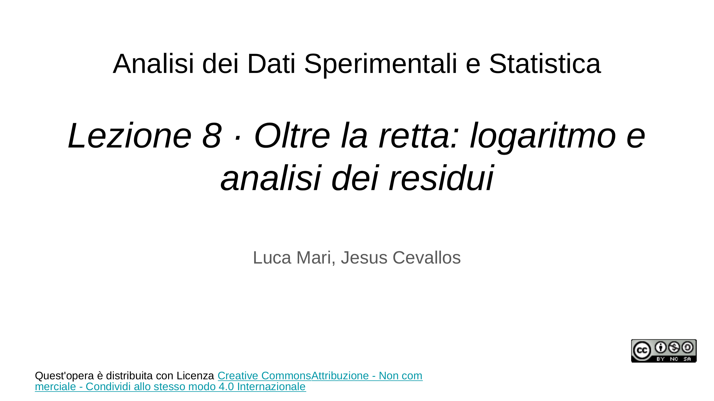
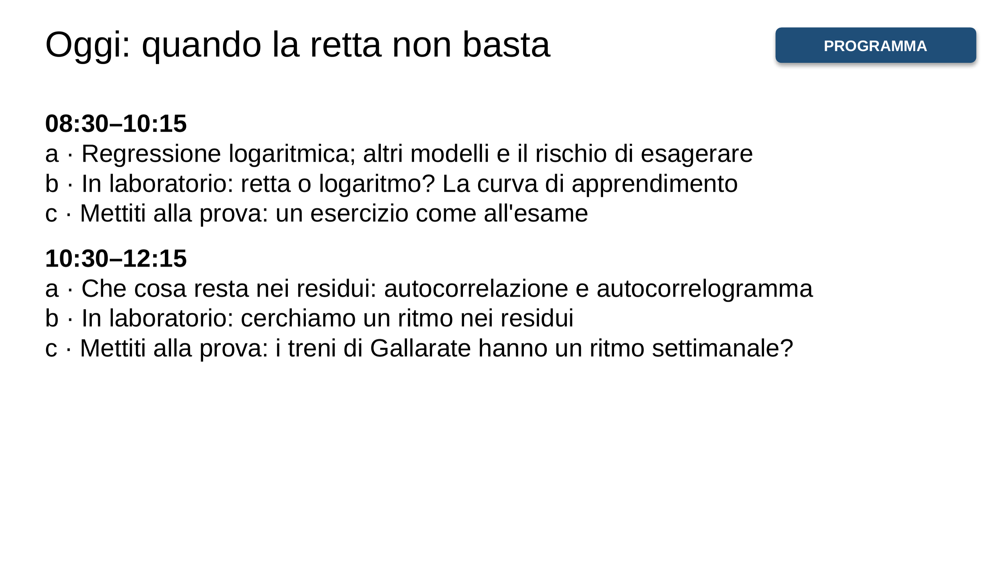
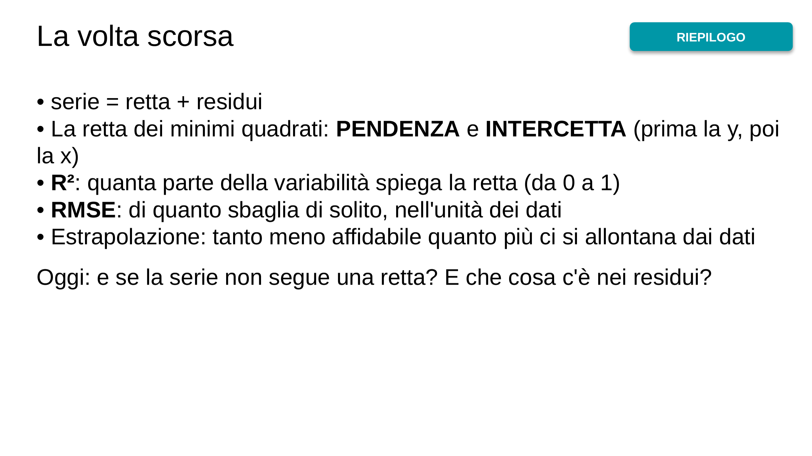
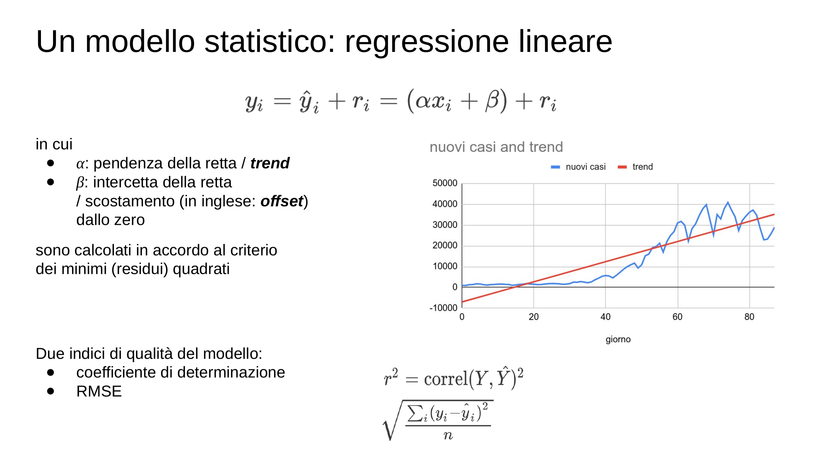
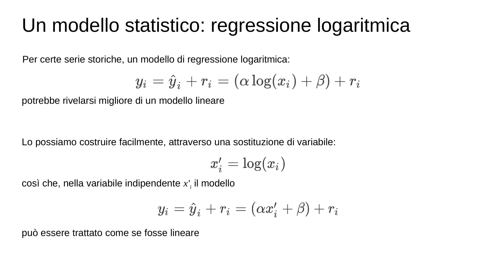
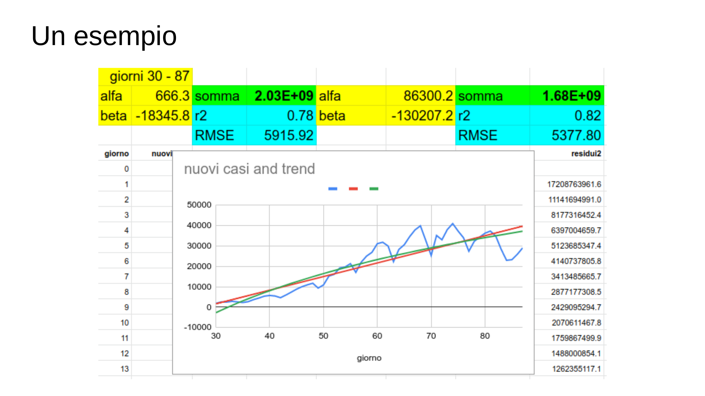
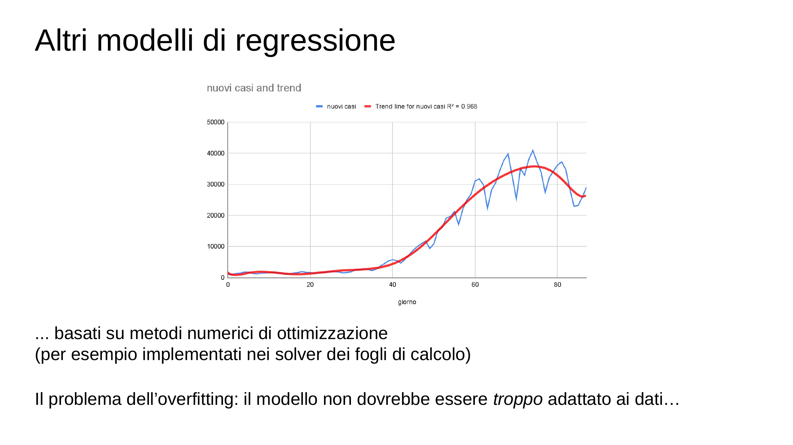
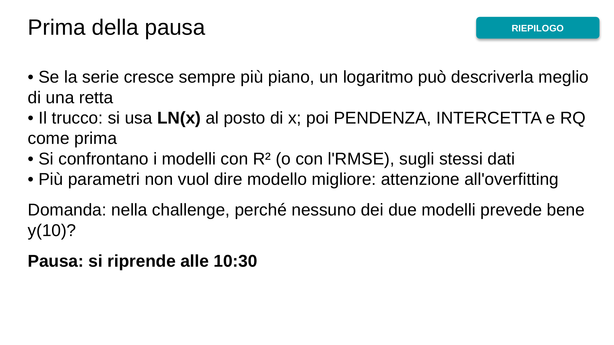
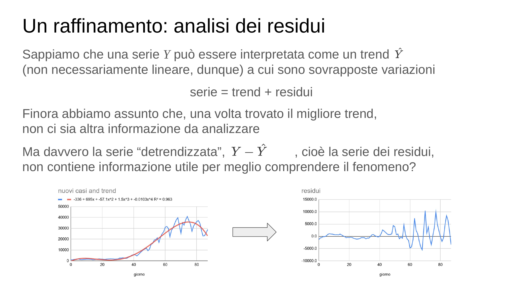
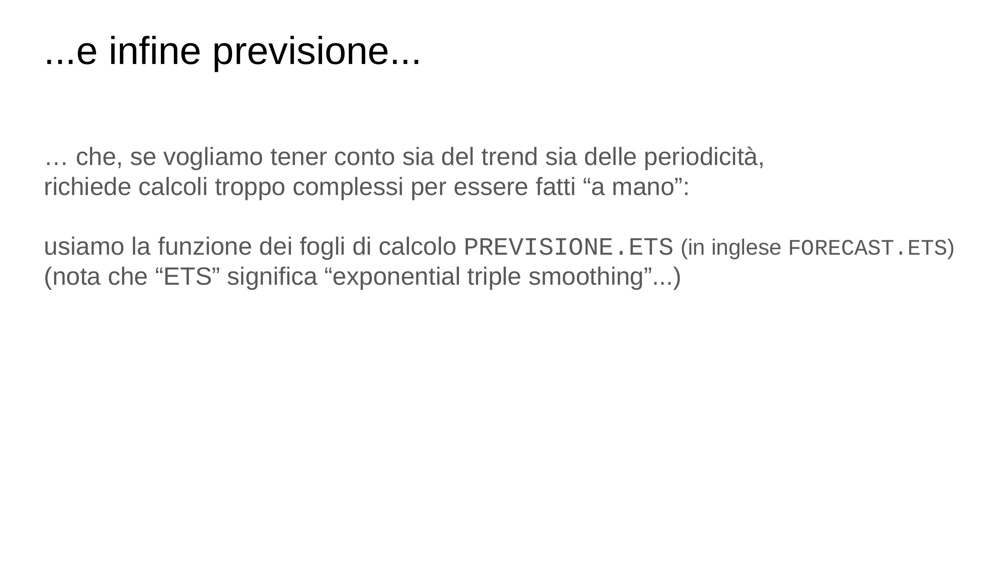
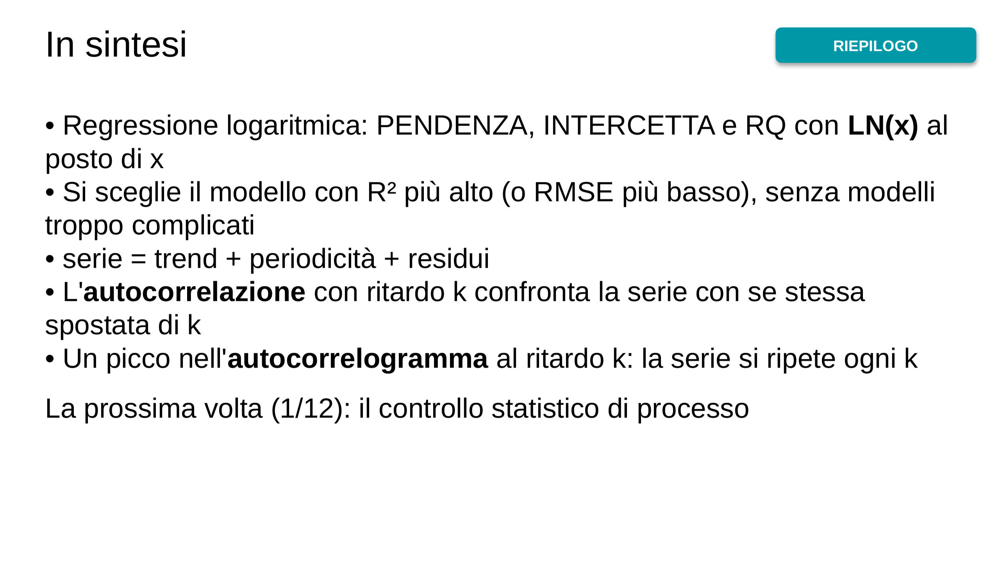
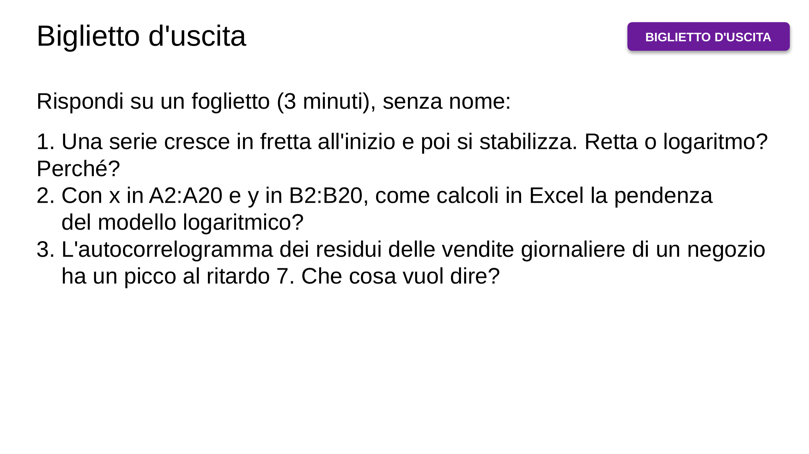

![Qualche suggerimento: – consulta l’“Aula Virtuale” su ecorsi – usa il materiale didattico, e non solo i tuoi appunti – frequenta le lezioni, e fallo in modo attivo, anche nella parte “laboratoriale” – lavora in modo costante – confrontati regolarmente con qualche compagna/o – cerca di capire e di imparare a risolvere problemi, non di memorizzare · (vedi il materiale didattico, capitolo 4. Analisi di serie storiche) (e puoi valutare le tue conoscenze e competenze a partire dagli esempi di problemi proposti)](img/03-1f7ca589cc.webp)

![In laboratorio: retta o logaritmo? · LABORATORIO · Un nuovo operaio in linea di montaggio: pezzi montati in un'ora, settimana per settimana A2:A13 le settimane 1…12; B2:B13: 20 26 28 31 33 34 36 36 38 38 39 40 Retta: I2 =PENDENZA(B2:B13;A2:A13) I3 =INTERCETTA(B2:B13;A2:A13) I4 =RQ(B2:B13;A2:A13) C2: =$I$2*A2+$I$3 E2: =LN(A2) il trucco: usare ln(settimana) al posto della settimana Logaritmo: I7 =PENDENZA(B2:B13;E2:E13) I8 =INTERCETTA(B2:B13;E2:E13) I9 =RQ(B2:B13;E2:E13) D2: =$I$7*LN(A2)+$I$8 Grafico di A1:D13. Quale modello è migliore? Quanti pezzi all'ora alla settimana 52?](img/11-314578ee65.webp)
![Mettiti alla prova! Come all'esame · CHALLENGE · Dalla seconda prova parziale del 28.1.16. Genera la serie con x = 1,00; 1,05; …; 4,00 e y = −1/x + w, con w a caso tra −0,2 e 0,2. 1. Visualizza la serie in un grafico 2. Calcola la retta di regressione e il suo coefficiente di determinazione 3. Calcola la regressione logaritmica e il suo R²: quale modello è migliore? Perché? 4. Prevedi y(5) e y(10) con i due modelli: quanto ti fidi delle previsioni? 5. Confronta la deviazione standard di y con quella dei residui del modello logaritmico Per ogni risposta scrivi una frase in una cella del fogl…](img/12-3bc6a434c3.webp)
![Una domanda importante: la serie è stazionaria? · Cioè: al di là delle variazioni locali, il fenomeno che genera i dati è stabile, o nel corso del tempo ha cambiato le sue caratteristiche? · (se una serie è stazionaria, i dati acquisiti nel passato ci consentono di fare previsioni affidabili) · Nel caso più semplice, accertiamo la stazionarietà di una serie verificando se la posizione e la dispersione dei dati (dunque, p.es., media e deviazione standard) rimangono “abbastanza costanti” nel corso del tempo](img/14-b0c33adf19.webp)
![Analisi dei residui per identificare periodicità · Adottiamo dunque un modello del tipo serie = trend + possibili periodicità + “residui residui” e operando perciò sulla serie dei residui. · +2 · +3 · 1 0 0 1 0 0 1 0 0 1 0 0 1 0 ... · 1 0 0 1 0 0 1 0 0 1 0 0 1 0 ... · 1 0 0 1 0 0 1 0 0 1 0 0 1 0 ... · Nel caso più semplice, la serie dei residui è: · Confrontiamo la serie con se stessa traslata di 2 periodi: · Confrontiamo la serie con se stessa traslata di 3 periodi: · 1 0 0 1 0 0 1 0 0 1 0 0 ... · 1 0 0 1 0 0 1 0 0 1 0 ... · cioè di periodo 3 · La correlazione è bassa... · La correlazione…](img/16-f5e6387ec3.webp)
![Analisi dei residui per autocorrelazioni · Dunque: 1. calcoliamo la correlazione della serie dei residui con se stessa (autocorrelazione) traslata nel tempo di 2, 3, 4, ... periodi (magari usando la funzione indice() per efficienza…) 2. se la correlazione di periodo k è significativa, è perché la serie ha una significativa periodicità di periodo k · delta giorno autocorrel 3 -0.38 4 -0.41 5 -0.02 6 0.48 7 0.82 8 0.33 9 -0.16 10 -0.51 11 -0.48 12 -0.14 13 0.39 14 0.60 15 0.13 · Sulla serie dei residui: · L’autocorrelogramma:](img/17-e59bb398e5.webp)
![L'autocorrelazione in Excel · Residui in D2:D11. Si confronta la serie dei residui con se stessa spostata di k: ritardo 1: =CORRELAZIONE(D3:D11;D2:D10) ritardo 2: =CORRELAZIONE(D4:D11;D2:D9) ritardo 3: =CORRELAZIONE(D5:D11;D2:D8) Ogni volta il primo intervallo comincia una riga più in basso e il secondo finisce una riga più in alto: i due intervalli hanno sempre la stessa lunghezza. Autocorrelogramma: il grafico a colonne delle autocorrelazioni, ritardo per ritardo. Un picco al ritardo k vuol dire: la serie si ripete ogni k.](img/18-8045b2a3c0.webp)
![In laboratorio: un ritmo nei residui · LABORATORIO · Le vendite della volta scorsa: A2:A11 settimane 1…10; B2:B11: 3 5 4 6 8 7 9 11 10 12 I2 =PENDENZA(B2:B11;A2:A11) I3 =INTERCETTA(B2:B11;A2:A11) C2 =$I$2*A2+$I$3 (retta) D2 =B2-C2 (residuo) fino alla riga 11 Grafico dei residui (A e D): vedi uno schema che si ripete? F2:F5 i ritardi 1, 2, 3, 4; in G2:G5 le autocorrelazioni (slide precedente) Autocorrelogramma: grafico a colonne di G2:G5 Quale ritardo ha il valore più alto? Che cosa vuol dire per le vendite?](img/20-2af2fc6717.webp)
![Mettiti alla prova! Gallarate ha un ritmo? · CHALLENGE · File ritardi_treni_gallarate.xlsx, foglio «Gallarate_2024» (A data, B minuti di ritardo) 1. In C metti il numero del giorno: 1, 2, …, 366 2. Retta di regressione tra giorno e ritardo: c'è un trend? (guarda R²) 3. In D la retta, in E i residui 4. Autocorrelazione dei residui per i ritardi da 1 a 14 (in G2:G15). Formula da copiare in H2: =CORRELAZIONE(INDICE($E$2:$E$367;G2+1):$E$367;$E$2:INDICE($E$2:$E$367;366-G2)) 5. Autocorrelogramma: quale ritardo ha il valore più alto? Perché proprio quello?](img/21-dcdf11d962.webp)